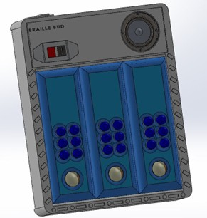
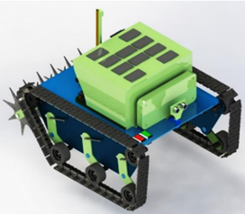
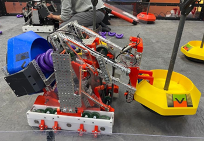
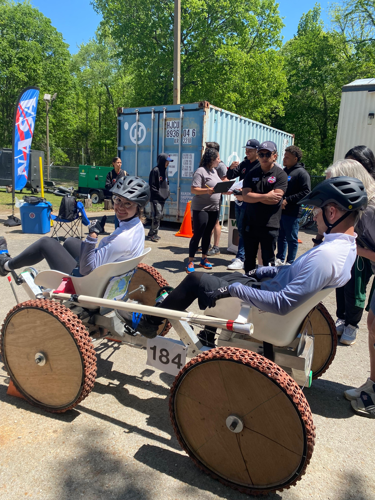
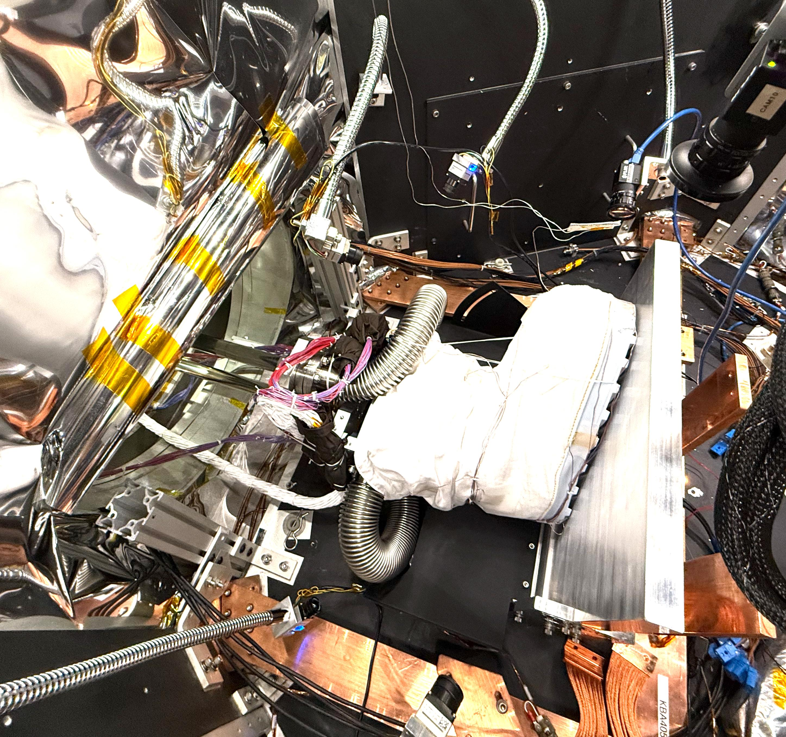
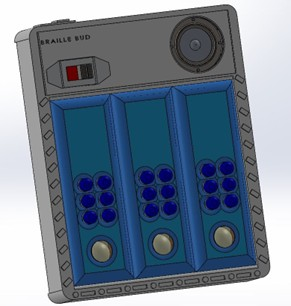
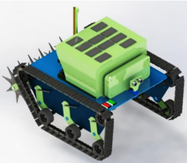
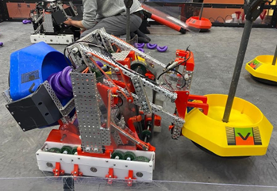
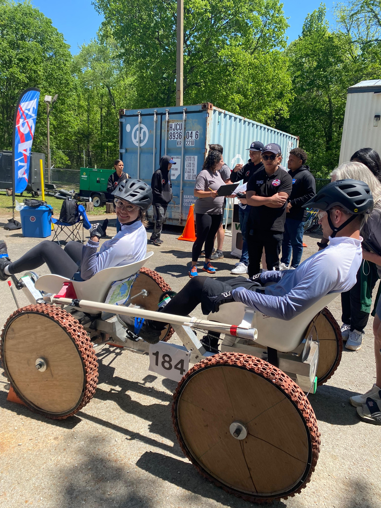
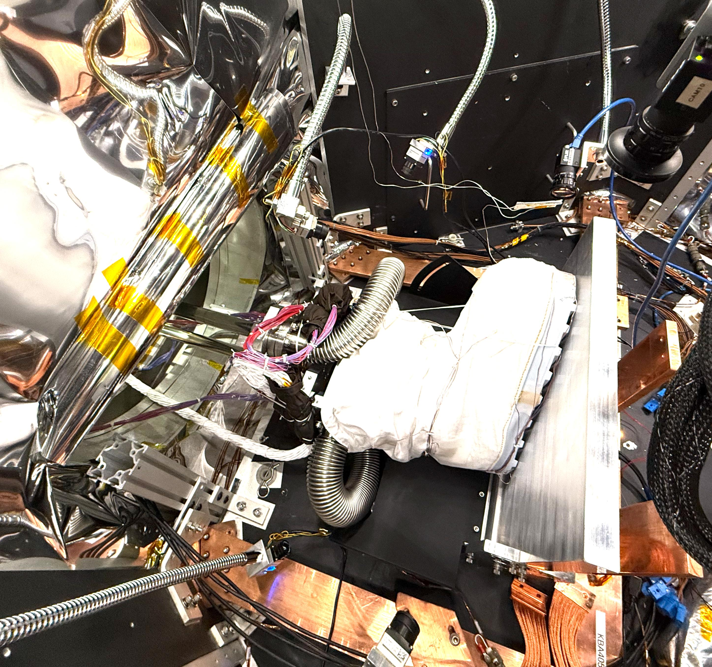

| Project Lead | Subsystem Lead | |
|---|---|---|
| Community-based Project |  BrailleBud |
 ReGenBot |
| Competitions |  VCAT Robotics |
 VCAT Rover Club |
| Icy Worlds |  Sample Integrity |
 Astronaut Boot |
Check out my undergrad and professional projects below!
During my engineering career, I've had the amazing opportunity of working with teams to build competitive robots and rovers, pitch engineering concepts to solve social issues in Latin America, and develop test concepts for icy worlds and moon research and development projects! Click below on one of my projects to get more information 🌕
| Project Lead | Subsystem Lead | |
|---|---|---|
| Community-based Project |  BrailleBud |
 ReGenBot |
| Competitions |  VCAT Robotics |
 VCAT Rover Club |
| Icy Worlds | Sample Integrity |
 Astronaut Boot |
If you have questions about any of the projects listed above, let's chat about it!